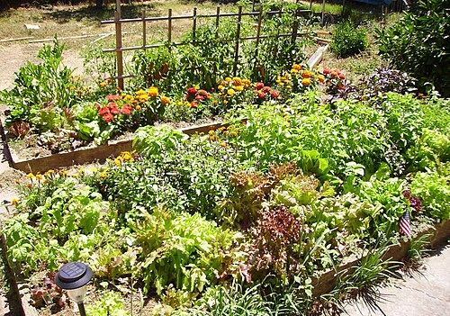
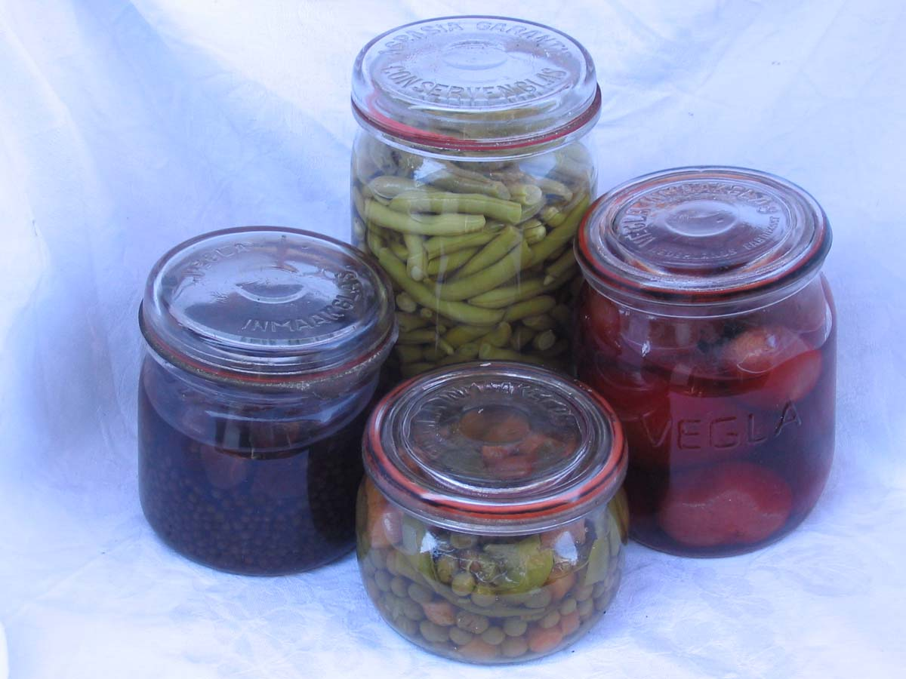
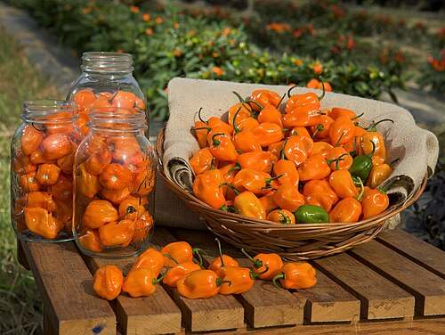
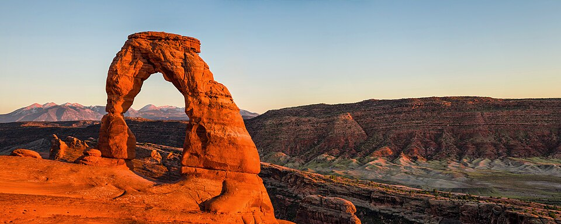
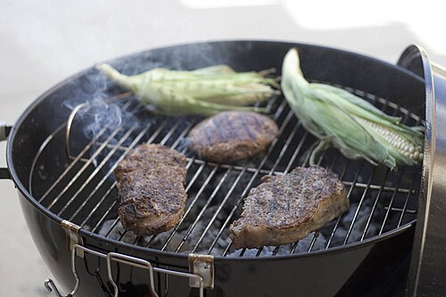
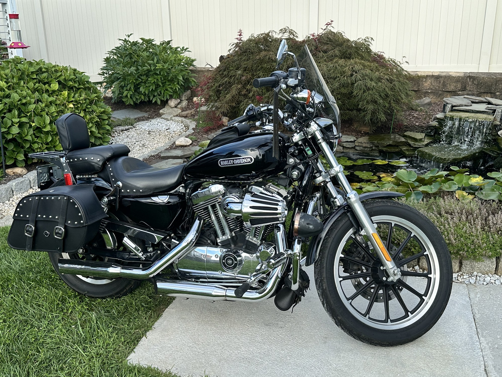
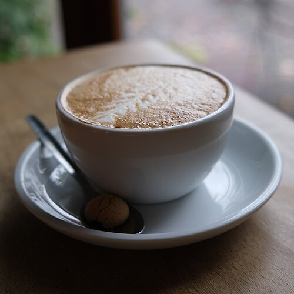
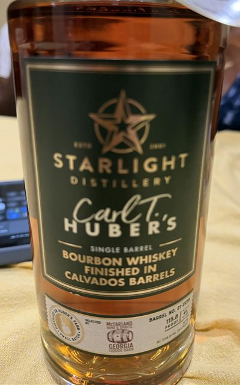
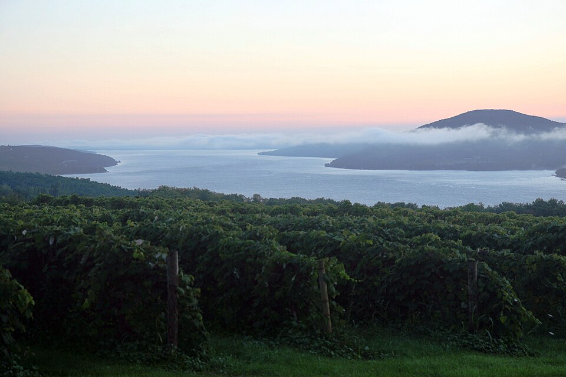
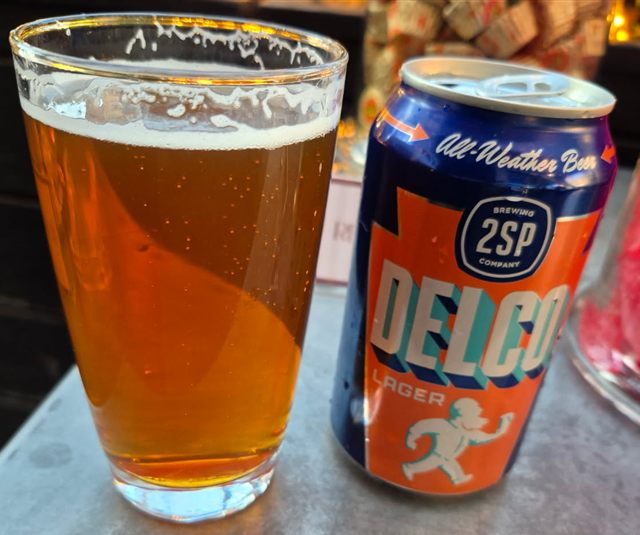

Beyond the Screen.
A quick reference for the things worth exploring away from cybersecurity: the garden, motorcycles, good food and drink, and useful everyday gear.
Garden & outdoors
Growing guides and time around the fire.

My Garden
Crop guides, planting and harvest timing, and notes for the Lehigh Valley.
Explore the garden →
Home Canning
Learn safe preservation methods, equipment, storage, and trusted canning resources.
Explore home canning →
Hot Peppers
Explore pepper varieties, growing tips, and a printable Scoville heat chart.
Explore hot peppers →
Hiking Out West
Explore arches, canyons, giant sequoias, and mountain trails, organized by park.
Explore western hikes →
BBQ & Outdoor Cooking
Smokers, fire, food safety, and low-and-slow technique.
Explore BBQ →
Motorcycles
My bikes, rallies near and far, scenic rides, and rider resources.
Hit the road →
Bed & Breakfast Getaways
Explore welcoming inns within 150 miles of Bethlehem.
Find a getaway →Food & drink
Coffee and the Reserve Shelf, with direct links to each collection.

Specialty Coffee
Roasters, equipment, water, and brewing fundamentals.
Explore coffee →The Reserve Shelf
Recommended Scotch, bourbon, wine, and beer at a glance.
Explore the shelf →Single Malt Scotch
Scotch selections, tasting notes, and a worldwide top 25.
Explore Scotch →
Best Bourbons
Bourbon recommendations and tasting notes.
Explore bourbon →
Best Wines
Wine selections and tasting notes.
Explore wine →
Wineries & Wine Trails
Discover wineries and wine trails in the Finger Lakes and closer to home.
Explore wineries →
Best Beers
Beer selections and tasting notes.
Explore beer →Everyday gear
Useful, well-made things for daily life.
Photo credits
Photos are resized and may be cropped. The motorcycle and individual drink photos are from my collection; other images are illustrative.
- Garden: Srl, Wikimedia Commons, CC BY-SA 3.0.
- Home canning: Teunie, Wikimedia Commons, CC BY-SA 3.0; illustrative, resized and may be cropped.
- Hot peppers: Stephen Ausmus, Wikimedia Commons, public domain.
- Hiking Out West: Robbie Shade, Wikimedia Commons, CC BY 2.0; resized and may be cropped.
- Bed & breakfasts: Zeete, Wikimedia Commons, CC BY-SA 4.0.
- Barbecue: Brian Chu, Wikimedia Commons, CC BY 2.5.
- Coffee: Edward, Wikimedia Commons, CC0.
- Reserve Shelf: FreeclimbZurich, Wikimedia Commons, CC BY-SA 4.0.
- Wineries & wine trails: Visit Finger Lakes, Wikimedia Commons, CC BY 2.0.
- Everyday carry: MONDIZOU, Wikimedia Commons, CC BY-SA 4.0.
- Heritage goods: A Continuous Lean, Wikimedia Commons, CC BY 2.0.